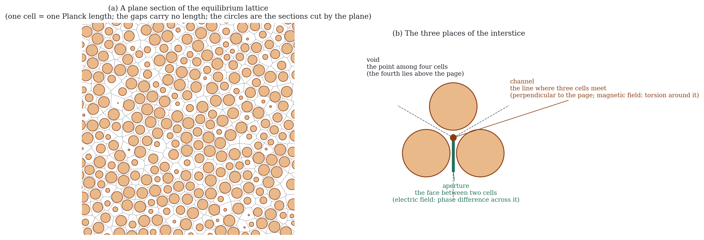
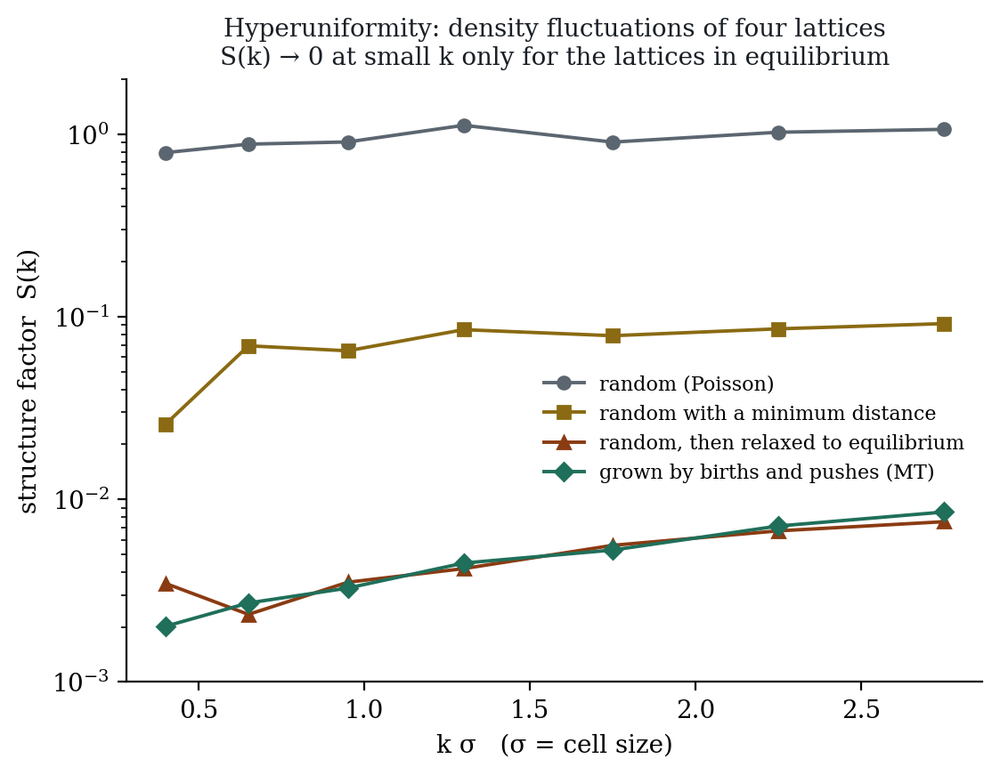
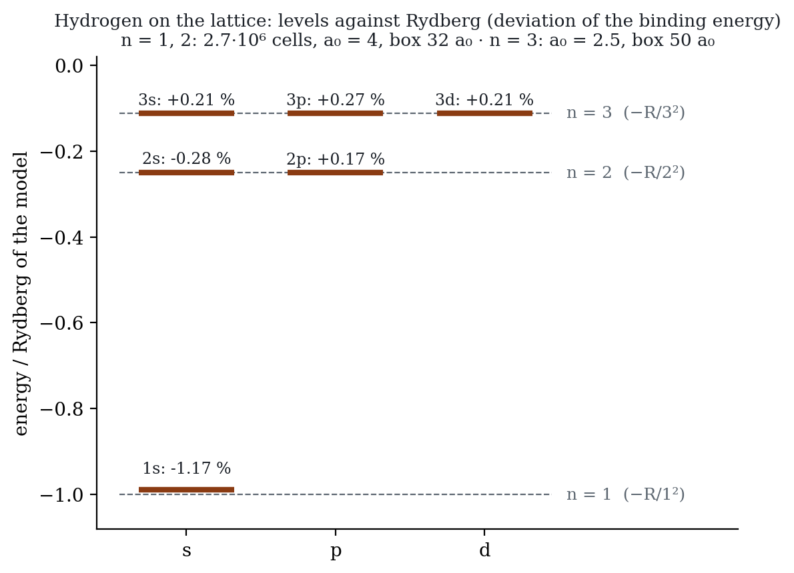
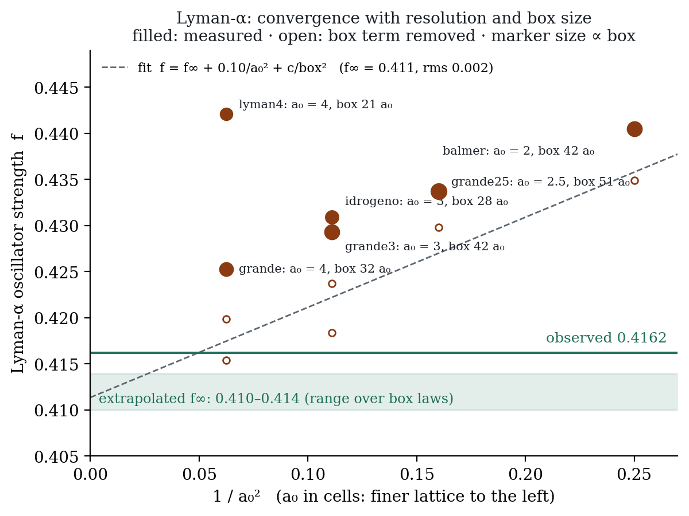

A discrete model of space · Working document · October 2026 · Italian original · Glossary
A lattice of cells that do not touch, held in mechanical equilibrium. What we call light, matter, time and gravity are ways of using the space between the cells. A single accounting rule governs every excitation: each vibration disposes of a unit budget, which it may spend in three ways.
I² + T² + qIG² = 1
On three-dimensional random lattices in mechanical equilibrium, most of the postulates of MT are now either theorems or measurements, and the remainder has a definite form. This document distinguishes three levels: demonstrated — a theorem or a verified numerical result; coherent — a mechanism that reproduces the data but depends on a choice not yet derived; open — a problem still to be solved.
E² = K² + m² and I² + T² = 1 follow from the anticommutation of motion and inversion, on any lattice, in continuous time and at discrete steps. The pause is a to-and-fro motion along the spin axis.
As an electromagnetic field on the faces shared by adjacent cells: speed exactly c, isotropic, without birefringence, without scattering of long waves. The equilibrium vacuum is transparent.
The critical contagion yields 1/r; the occupation, being a probability, saturates, and the saturation fixes Mercury's perihelion advance at 42.99″. The profile is no longer imported. The strength — G — remains to be derived.
Three faces meet around a channel. Three generations, three neutrinos, three families of quarks, and no fourth. Koide's angle has a physical candidate: the typical imbalance of the channels.
Cells are born where the pushes fail to close; equilibrium extinguishes the births; the first vibration is the first impact on a closed shell. Inflation, its end and the hot Big Bang are a single transition.
Four cells ordered by birth possess a chirality; chance selects it, adjacency inherits it. One handedness for the whole universe, invisible to light and barely felt by matter.
The reference scale is fixed: a cell is one Planck length, a step one Planck time, and light advances one cell per step. The interstice is an elastic connection between cells, with two geometric stiffnesses — stretching at the apertures, torsion in the channels — and no free constant until it is engaged. The proton is a closed vortex of phase around a channel; the string is a vortex line, its tension arises from the balance between gradient energy and the stiffness of the vacuum, and with the string tension alone the balance yields the proton, the Δ and the first resonances. The beginning is read from the centres — a point, a connection, a triangle, a tetrahedron: one, two, three dimensions, then time — with the birth rule «one cell at the centre of every connection stretched beyond 1.3 ℓ_P». Entanglement is an interstitial relation, not a pair of values. Beta decay is one attempt per step with a universal probability and counted destinations (muon, tau and neutron lifetimes within 1 % from a single constant), and the measured g_A implies that the quark in the vortex pauses for 82 % of its budget with an amplitude of 282 MeV. The matrix mechanics of MT is Heisenberg's with finite sparse matrices: [X_a, K] = iV_a is an identity, the uncertainty relations follow from the spectrum, and hydrogen on lattices of up to 2.7 million cells yields the Rydberg levels, the 2s–2p degeneracy to 0.45 %, Lyman-α at 0.425 against 0.416 and Balmer 2p→3d at 0.690 against 0.696, stable under changes of packing fraction, boundary and weights. Details in sections 04g–04j.
The document is also published as six linked chapters (in Italian), each with the legend and its own open problems: 1. The lattice · 2. The vibration · 3. Quarks and nuclei · 4. Generations and handedness · 5. Gravity · 6. The beginning and the cosmos.
Spacetime is a discrete lattice of cells. At each step — the batch of the Italian documents — a cell may generate an adjacent one where the pushes between cells fail to close: at the centre of a connection stretched beyond 1.3 ℓ_P. The birth probability per cell and per step, p₀, is not a constant of nature but the state of the lattice: large while the lattice is out of equilibrium, small once it has settled.
In the epoch of initial growth there is no vibration; the steps therefore carry no time, and a probability per step in that epoch is not a physical quantity. Of that epoch only the counts and the resulting structure matter — the packing fraction, the neighbours, the channels. The constants of physics do not descend from p₀: they descend from the geometry of the equilibrium lattice (α from the stiff neighbours, the three generations from the channels) and from the four scales not yet derived, listed in the closing section. position fixed
The distance between two points is the number of cells separating them. The cells are spherical and do not touch, but the interstice does not contribute to distance: only cells carry physical meaning. The count is invariant — a metre is always the same number of cells, with or without mass present. Any deformation of the lattice is irrelevant to events and therefore devoid of meaning.
There is no temporal dimension. There is the step, a counter of events. Nothing elapses between one step and the next: a step occurs. Were the rhythm of the steps to change, no observer could notice — every process would rescale together. The Planck time is not a fundamental duration: it is the translation of «one step» into seconds, and the second is a human convention.
It follows that c is not a velocity. It is the ceiling of improbability: one cell per step, the maximum the structure permits. In lattice units it equals 1.
It is a vibration living on the surface of a cell — like the surface of a pool seen from below — and transmitted to the neighbours. Only the component along the direction of motion survives transmission. A particle does not move: it is re-ignited, cell after cell.
The total improbability always equals 1, partitioned over orthogonal axes. The linear partition — the naive hypothesis — is wrong by 41 %; the Pythagorean one reproduces relativity to machine precision. derived
Substituting into the relativistic relation E² = p² + m² and simplifying yields exactly I² + T² = 1. The fundamental relation of relativistic dynamics is the partition identity, written in units of energy rather than of budget. What in relativity is the norm of a four-vector is here a conservation law: the total equals one.
The mass cancels in the simplification. It is the scale factor that remains invariant however the budget is partitioned — the radius of the circle on which I and T move. This is why it is the same for all observers while energy and momentum are not.
Relativistic inertia ceases to be a result to be derived: to accelerate is to transfer share from time to propagation, and the last fraction costs infinitely because the account cannot be emptied entirely. With c = 1, E = m: mass and energy are not two substances related by an exchange rate; they are the same share in two states.
One objection must be met directly. A vibration with improbability 0.5 advances one cell every two steps: it pauses every other step. It would therefore seem to experience half the time. But the Lorentz factor in that regime gives 0.866, not 0.5. If proper time were simply proportional to the number of pauses, MT would be wrong — by 41 %.
The reconciliation lies in the fact that the two numbers measure different things. The count of pauses is linear — 1 − I — and is correct as a count of events: the vibration does pause half of the time. But proper time is not the raw count: it is the projection onto the temporal axis, and the two axes are orthogonal.
Pausing and advancing are not two ways of spending the same resource along a line. They are counts along perpendicular directions, and what the vibration registers as its own time is the leg of the right triangle, not the difference. Every pause occurs, but contributes to the clock only through its temporal component: part of the phase advance is committed to the spatial component of the wave.
A qualification of the statement «time is the count of pauses» follows: it holds exactly only at rest, where the entire budget lies on T and the two readings coincide. In motion they diverge, and the physical one is the projection. verified to 10⁻¹⁶
Orthogonality is not chosen for convenience: it is the very structure that makes I² + T² = 1 coincide with E² = p² + m². Were the partition linear, that coincidence would disappear, and with it the energy–momentum relation. Two independent constraints select the same geometry.
In special relativity motion is purely relative: each twin sees the other move, the situation appears symmetric, and acceleration or a change of reference frame must be invoked to break the symmetry and establish who has aged less. This is the point that generates the sense of paradox.
In MT the symmetry is absent from the outset. The partition of the budget is a property of the vibration with respect to the lattice, not a relation between two observers. One of the twins does hold a larger share in I and a smaller one in T: it pauses less and accumulates less time. There is nothing to break, because there was no symmetry to break.
This, however, reintroduces a privileged reference frame — that of the lattice, in which the seed cell was born. It stands in tension with a very robust experimental fact: no Michelson–Morley-type experiment has ever revealed an absolute frame.
It is worth being precise about what those experiments actually establish. Michelson–Morley shows that light traverses the same path in the same way for every observer, whatever the observer's motion. It does not show that no substrate exists: it shows that, if one exists, its effects compensate exactly and produce no measurable difference. It is a null result on a measurement, not a proof of absence.
In MT that compensation has a reason, and it is not a fortunate coincidence. Light has I = 1 under all conditions: it is the ceiling of the partition, not a velocity relative to anything. There is no «wind» to add to or subtract from, because propagation is not a displacement through a medium — it is a succession of ignitions, one cell per step, identical everywhere.
The resolution is that the lattice cannot be measured from within. Every clock and every rod is itself made of vibrations that sample the lattice by the very same rule. An apparatus in motion has its share I, and that share alters its rhythm and its extension together — by exactly the amount of what it would seek to measure. The deficit cancels in every possible comparison.
No observer can measure its own I absolutely: only differences with respect to other vibrations. MT therefore has an underlying absolute and a perfectly relativistic phenomenology. interpretation, not prediction
«According to the general theory of relativity, space without ether is unthinkable.»
Albert Einstein — Leiden lecture, 5 May 1920In the same lecture Einstein specifies in what sense: not the luminiferous ether of the nineteenth century, not a medium with material parts whose motion could be followed or to which a velocity could be ascribed, but something nonetheless physical — a space endowed with qualities, without which neither the propagation of light nor the very possibility of rods and clocks would exist, and hence no spacetime interval in the physical sense.
This is precisely the position MT occupies. The lattice has no moving parts and no velocity of its own. But it is physical, and it is what makes the two accountings possible — cells and steps — without which there would be neither distances nor durations to measure.
It should be stated precisely: this position is empirically equivalent to special relativity, not a testable alternative to it. It does have a natural anchor — the frame in which the cosmic microwave background is isotropic is already, de facto, a privileged reference frame in cosmology, and would be the obvious candidate for the frame of the lattice.
A vibration that pauses returns repeatedly to the same cells. This is the difference in kind between what has mass and what has not: light visits each cell once and passes; matter revisits. Repeated visits engage the cells, and an engaged cell takes a share of the budget of whatever passes through it. This share is qIG.
The engagement is transmitted to the neighbours by contagion, not by transfer: the cell that spreads it loses nothing, which is why the field persists as long as the mass remains. The occupation is never integral — it is a probability, and may be as small as 10⁻⁶³ without vanishing. There is therefore neither a minimum threshold nor a finite range. derived
Where qIG is large, each pause yields less time. It depends on position, not on motion: a body in free fall is subject to it as well, as the GPS satellites show.
A vibration extends over many cells. Its inner part lies where the field is stronger, its outer part where it is weaker: the parts evolve at different rates and the object becomes unbalanced.
This removes a postulate of general relativity. There, bodies fall because they «follow geodesics» — but nothing in the geometry says why they should: it is an independent axiom. In MT the motion is the arithmetical consequence of being extended within a gradient. The geodesic principle becomes a theorem.
Light has I = 1: no residual share the field could withdraw, and indeed its timelessness remains intact. But its wavefront is extended, and its two sides traverse regions where the rhythm differs. The front rotates. The mechanism is identical to the fall of a stone — the only difference is that matter, by pausing, also accumulates proper time.
A single p₀ governs two accountings, temporal and spatial, and both suffer the same deficit because they are the same count read in two directions. Hence the factor 2 separating Newton from Einstein — a brute fact in general relativity, a necessity here.
qIG is a share of a unit budget: it neither exceeds 1 nor falls below 0. The temporal weight may vanish, but nothing diverges. And the quantum of action remains integral — an elementary event cannot be thinned below unity. Where general relativity requires singularities, MT has saturation at finite values. This is the sharpest divergence between the two.
The cells do not touch; the space between them is the interstice, and geometry alone divides it into three places: the aperture between two cells, the channel onto which three cells open, the void among four. Each cell owns the region of space nearest to it; two neighbouring cells share a face. Everything MT calls light, field, chirality and gravity resides in these places.


The vacuum functions only if on every cell the pushes of the neighbours close. Such a lattice is hyperuniform: large-scale density fluctuations vanish, scaling as the surface rather than the volume. It is the same condition that makes light isotropic and transparent, and that yields Koide's angle. measured
A lattice grown by adjacent births and a random lattice subsequently relaxed exhibit the same hyperuniformity and the same transparency. What matters is equilibrium, not history. measured
The electric field is the phase difference along an aperture; the magnetic field is the torsion that difference leaves when going round the apertures that surround a channel. Light is the exchange between the two, one cell per step, without ever entering a cell. Hence it carries no charge, does not pause, has no time and does not interact with itself. verified on the lattice
The agreement between the vibration on the cells and that in the voids — in phase or in antiphase — is chirality. It resides in cells and voids, which light does not touch: the vacuum may have a handedness without being birefringent. continuum; to be verified on the lattice
The photon uses two of the four parts of the interstice: the electric field in the apertures, the magnetic field in the channels. The electron uses all four: a vibration distributed over cells, apertures, channels and voids — the construction known in mathematics as Kähler–Dirac. On the random equilibrium lattice:
Speed 1.0002 without adjustment, isotropic; energy dependence quadratic and minute (a delay of 10⁻¹⁹ s for the 31 GeV photon of GRB 090510); no rotation of the polarisation (10⁻⁷); no scattering for waves longer than a dozen cells, then a growth as k⁶: distant galaxies arrive sharp even under the most pessimistic assumption. The equilibrium lattice scatters 10–100 times less than an arbitrary one. measured
A spinor placed on the cells produces a multitude of spurious modes — the doubling problem — and is unusable. The vibration on the four parts has none: exact multiplicities, speed 0.998, budget I² + T² = 1 exact to 10⁻¹⁴ with the even/odd inversion as the pause, oscillation along the spin axis with the correct period. The pause is the reversal of the passing part — apertures and voids —: it acts in the interstice and pays on the cells, with an amplitude that depends on the phase mismatch and engages the half-sphere of neighbours towards which it returns (κ = N/2). measured interpretation
Eight components are two Dirac particles, not one, and the lattice distinguishes them only at the 0.1–0.3 % level. Spin ½ emerges from the geometry only in pairs — as in nature: electron and neutrino, up and down quark. The copies are the weak doublet, distinguished by the cell/void agreement; the agreement operator remains to be constructed and the numbers to be verified. doublet; construction pending
In Dirac's hydrogen the inversion share is exactly √(1−α²) and the motion share α: the binding energy is the slowing of the electron's proper time. The zigzag at speed c with inversions at the Compton rate has diffusion coefficient ħ/2m, Nelson's value. exact in Dirac's theory, not yet on the lattice
A critical contagion — each engagement produces on average one in the next cell, chosen at random among the neighbours — gives a mean number of engagements per cell that falls as 1/r (exponent −0.986). The occupation is the probability that a cell carries at least one engagement, hence 1 − e^(−n): it grows as n and then saturates. The rate of time is e^(−n/2).
The saturation fixes the non-linear term: 42.99″ per century. A linear field would give 57″, a self-feeding one 72″. No self-feeding term is required. derived
T² = e^(−n) never vanishes. The shadow of a black hole comes out 4.6 % larger than in general relativity — compatible with current measurements, decidable by the next generation of instruments. At second order the solar deflection differs by 0.7 microarcseconds. prediction
Near a mass the cells are denser and the rhythm slower, by the same fraction: the same deficit read twice, whence the factor 2. A rod always measures the same number of cells, because it is made of atoms immersed in the same geometry; what changes is the number of cells between free bodies, and this is what interferometers measure when a gravitational wave passes. coherent
If each inversion launches κ engagements, G corresponds to κ ≈ 5–6 with the cell at the Planck scale: about half of the 11.7 neighbours of influence, the same number that fixes α. A coincidence within the ambiguity of what a Planck length is, in cells. to be derived
No breathing mode: the volume is the number of cells, which changes only by birth. No displacement mode: the pushes close on every cell (this is the conservation of momentum). What remains is the cross — stretching along one axis and shortening along the perpendicular one, at constant volume — in its two orientations: two polarisations, as for light, because the interstice has two properties. It is carried by the two stiffnesses of the connections, which restore and transmit one cell per step: the speed of light, as measured by GW170817. An interferometer counts the cells between free mirrors. A clarification: the absence of a breathing mode follows from Gauss's law, not from any incompressibility of the lattice, which does contract; and the wave is the directional part of the deformation, not the scalar contraction. reason established lattice dynamics to be verified
Not a wandering contagion, but the elastic push: the engagement alters the pushes of the neighbours, which transmit them one cell per step. The 1/r profile is the stationary state — Poisson — shared with the random walk, which survives as the statistics of engagement; the transient travels at c, the field of a moving body follows it with the correct delay, and gravitational waves are the same push in its time-dependent part. carrier identified; to be verified
Every vibration engages the cells it touches in proportion to its own energy: matter, which revisits, and light, which passes. Thus everything that carries energy gravitates, and the equivalence principle need not be imposed. choice fixed
Exactly three faces meet around a channel, and the three openings sum to 360°: 120° each on average. A pausing vibration has a dipole, and the dipole projects onto the three faces three values h_i = a[1 + √2 cos(θ − 2πi/3)]. From these Koide's relation, Q = 2/3, follows as a theorem for any θ; the measured masses satisfy it to five figures. Three generations because the faces around a line are three; no fourth because there is no fourth face. This holds for the charged leptons, the neutrinos and the quarks. geometry
In the equilibrium vacuum the openings are not exactly 120°: the typical imbalance of a channel has median 0.214 and mean 0.227 radians. The angle that reproduces 1 : 207 : 3477 is 0.222. It emerges only in equilibrium (a random lattice gives 0.51) and depends on the packing fraction: 0.28 at 0.60, 0.17–0.21 at 0.80. With the packing fraction fixed by MT, the three masses would become a parameter-free calculation. one-parameter coincidence
Same channel, non-rotating phase: almost massless and of Majorana type. The three-projection scheme, with its own angle and scale, reproduces both measured mass-squared differences and gives m = 0.38, 8.9, 50.7 meV, sum 60 meV, normal ordering. Cosmology is tightening precisely there: the decisive measurement is expected between 2030 and 2034. two-parameter fit
Four cells ordered by birth form a tetrahedron with a chirality, decided by chance when the fourth is born. The cell/void agreement takes that sign and inherits it by adjacency: one orientation for the universe, no mirror domains. The same orientation fixes the handedness of the weak interaction, read at one hundred per cent, and which phase we call matter, read at three parts in ten billion — the escapement of a quartz movement, which decides the direction without pushing. sign explained; magnitude to be derived
The 120° symmetry of the channel produces mass states that are «Fourier» superpositions of the three faces: large mixing, 35° and 45°, as observed for the neutrinos; the 8.6° departure from zero remains to be calculated. structure, not a number
Cells are born where the pushes fail to close. A single cell is the maximal imbalance; with two there is an aperture, with three a channel, with four a void; the first cell in equilibrium appears with the first closed shell, thirteen cells. As long as the group is unbalanced every cell generates: exponential growth, that is inflation, without duration because without vibrations there is no time. It ends when the lattice reaches equilibrium.
A push on an unbalanced lattice is absorbed by the rearrangement; on a closed shell it becomes a propagating oscillation. This is the first step that carries time, and the hot Big Bang is the equilibrium of the lattice converting pushes into light. Total energy: the initial imbalance released, redistributed ever since. verified in the mechanical model
An impact on an aperture goes 89 % into the light sector; on a channel, 54 %; on a cell or a void, 0 %. The light sector — apertures and channels feeding each other — is closed: it never touches a cell. From an oriented impact light emerges sideways and what touches the cells along the axis. exact
Today's births are the residue of the unfinished equilibrium, inhibited wherever time passes — that is, almost nowhere. Gravity cannot feed them (a factor 10⁵ is missing) and a varying proper time does not have the form of the data. MT predicts a Λ. Should the variation favoured by DESI be confirmed, MT would have to seek it in the dynamics of the settling. prediction
Frozen spherical contractions of the interstice: they persist because the contraction stops the time that would be needed to reopen, with compactness 2M/R ≈ 95 and mass proportional to the radius, from a milligram upwards. Dark because they do not pause, cold, collisionless, formed only in the primordial universe. The ratio of 5.4 to ordinary matter remains to be calculated. a conjecture with numbers
The vacuum is the lattice in its state of rest: cells at rest, pushes closed, no phase difference. It costs nothing, by the definition of equilibrium; it has no time, because it has no events; it does not fluctuate by itself — the Casimir and Lamb effects are the interstitial passages that the vibrations present induce around themselves. The interstice carries the conditions of passage: differences at the apertures, torsions around the channels, contraction, agreement with the voids. The cells carry states and time; the interstice carries conditions. A condition is not an event.
The stretching of an aperture is face area over length; the torsion of a channel is channel length over triangle area. These are the Hodge stars used for light: ratios of measures, fixed by the positions of the cells. The elasticity of the interstice has no parameters. measured
The channels with the shortest connections have torsion 1.44; the longest 0.25: a ratio of six, with a very steep dependence on length. Beyond 1.3 ℓ_P a connection is no longer stiff: the cell is adjacent but no longer a neighbour. The stiff neighbours per cell number 11.7 — the same weight of influence that gives α = 1/N². measured
A phase difference across an aperture is work spent by whatever wrote it, reflection for whatever crosses it, and potential light if it is released: the energy is the square of the difference, as for light. Equal differences add (repulsion), opposite ones cancel (attraction). structure
Its inversion amplitude is a mismatch, not an isolated number: the phase rotating in time against the aperture that would hold it still — the difference. Hence the mass of the charged leptons, larger than that of the neutrinos because a rotating phase agrees less well: charge and mass from the same mismatch. Spin is the relation between the phase and the circuit of passages: the torsion around the channels. Mass from the difference, spin from the torsion. The position of the electron among the three generations is geometric — the minimal projection of the dipole onto the three faces of the channel, close to zero — and only the absolute scale remains free. structure
Linear (light, weak fields); saturating (occupation 1−e^(−n): Mercury; stiffness ε₀ against windings: the string); blocked (dark matter); and, before equilibrium, plastic: the push absorbed in the rearrangement. The birth of time is the transition from plastic to elastic. A historical echo: MacCullagh's ether (1839), rigid under rotation and not under compression, which yields the equations of light. interpretation
Cell = ℓ_P, step = t_P, light = one cell per step. Typical connection 0.97 ℓ_P, short below 0.8, inert beyond 1.3; cell radius 0.44 ℓ_P, interstice between typical neighbours 0.1 ℓ_P. The Planck mass is the maximal mass of a vibration: inversion amplitude 1 per step. With this reference, gravity requires κ ≈ 5–6 engagements per inversion, and with N = 11.7 this is N/2: a hypothesis with a mechanism — an inversion engages the half-sphere of neighbours towards which it returns. If it holds, G is the number of stiff neighbours divided by two. to be verified
The three underived scales, as pure numbers. The inversion amplitude of the electron, 4·10⁻²³ per step: invariant (at rest it completes one inversion every 10²² steps, in motion every 10²²·γ), with structure — it is the mismatch of the rotating phase with the difference at the aperture, and its position among the generations is fixed by the channel — but with the absolute scale free. The stiffness of the vacuum against windings, 10⁻⁸⁰ E_P per cell (10⁻³⁹ per cell of string length, summing over the cross-section of the tube): the mismatch of the phase wound in space with the same aperture. The births, 4·10⁻⁶¹ per cell per step. The first two are two values of the same function — the reflection of the aperture as a function of the mismatch — for two different mismatches; a derivation would be that function, or a relation among the three scales. open
A quark is one third of a turn of the internal phase around a channel; the proton is a closed circulation with one full turn, one third per face, which does not divide because a third of a turn does not close. The number of turns is topological: it is conserved in every collision — it is the baryon number — and the proton, the lightest configuration with one turn, does not decay. Its mass: 1 % from the quarks, 99 % from the shared vibration, as observed.
The winding is around the string, not along it: a turn along the ring would lengthen at no cost. Every cell of the line carries the same full turn, hence the same cost: energy proportional to length. Pulling a quark means transferring to one third of the turn part of the budget in motion; the thread of traversed cells lengthens until it is cheaper to pinch it into two turns: pair creation, jets. structure
Gradient energy (2π)²κ/A, which would widen the vortex, against the cost ε₀·A of the engaged cells — the saturation of the occupation — which would narrow it. The minimum fixes the cross-section of the tube and the tension: this is the dual superconductor of 't Hooft and Mandelstam, with the condensate identified with the equilibrium vacuum and its stiffness with the saturation. The flux tubes of lattice QCD are about 0.5 fm wide. known mechanism, new seat
Motion share nħc/L plus engagement σL: minimum E = 2√(nħcσ). With √σ = 440 MeV and nothing else: 880 MeV (proton 938), 1245 (Δ 1232), 1524 (N 1520), 1760 (N ~1700); M² linear in n, that is, Regge behaviour. Engaged length 0.45–0.96 fm, 3–6·10¹⁹ cells. The pion (a Goldstone boson) lies outside the scheme; the ρ returns at 0.8 fm. one parameter, taken from QCD
Two circulations sharing cells pay for them once: mass(A) + mass(B) − mass(AB) = energy released, the mass defect. Deuteron 2.22 MeV = 2.3 attometres shared, 0.24 % of the proton; nuclei 8 MeV per nucleon = 0.85 %. Saturation of binding because sharing occurs only with adjacent channels; a surface term from the missing neighbours; the iron peak from the balance of sharing against phase repulsion. The EMC effect and short-range correlated pairs are the measure of the sharing. Complete fusion (Möbius) only in quark matter. fractions to be derived
Long incoming vibration: recoil as a whole. Shorter: a higher mode, the resonances, which return by emitting a small turn. Very short: one third of the turn pushed away, the thread stretches and pinches, a jet of hadrons; never a lone quark. The circularity is not broken: it multiplies. reading of the data
The neutron is the proton with one more expensive face of agreement (1.29 MeV). At every proper step the vibration attempts the excursion into the void — the cell–void current, the same exchange that «transported» when it was sought as the pause: the W is the quantum of that passage, 80 GeV its cost. The attempt succeeds only if there is a destination with rhythm to release: the neutron has one (p = 6·10⁻⁴⁷ per step, τ = 878 s), the free proton has none (Q = −1.80 MeV: it attempts and returns). A constant probability per proper step is the exponential law and time dilation (muons at CERN: 64.44 μs predicted, 64.42 measured). One number for all vibrations, G_F from the muon: it gives the τ lifetime to 0.3 %, the neutron to 0.8 % (the remainder: radiative corrections). The electron–antineutrino pair arises from the conservation of the rotating phase and of the doublet; the continuous spectrum is a single difference shared between two; the handedness (Wu) is the orientation. Prediction: neutrinoless double beta decay exists. verified (Fermi's theory, reinterpreted) G_F not derived: 2·10⁻¹⁷ E_P
In the neutron rate the factor 1 + 3g_A² = 5.88 is one exact difference (the rotating phase is conserved: g_V = 1) and three torsions. The rigid limit of three meshed faces gives 5/3; the reduction to 1.275 is the motion share of the confined vibration: g_A = (5/3)(1 − 4I²/3), and the measured value requires I² = 0.176 — the quark in the vortex spends 82 % of its budget pausing. For a Dirac vibration confined within R this means mR = 1.20: with R = 0.84 fm, the inversion amplitude of the quark inside the vortex is 282 MeV (one third of the proton: 313). Free, it would have 2–5: the difference is the reflection of the tube on one third of a turn — the «constituent mass», chiral symmetry breaking, in MT the spatial mismatch read as a pause. This is the fourth measurement of the same scale Λ, after the string tension, the proton mass and the width of the tube. The calculation is the bag model with massive quarks; MT reinterprets it, it does not discover it. calculated interpretation
ε₀ is taken from the string tension, not derived: in Planck units it is (Λ/E_P)⁴ — the hierarchy, in the form «why the equilibrium vacuum is so weakly stiff against windings». No simulation yields it without a mechanism linking the two scales. open
The lattice admits two dual readings: from the cells (cell, aperture, channel, void) and from the centres (point, connection, triangle, tetrahedron). Before four points no closed volume exists, neither inside nor outside: the two readings coincide. The first tetrahedron closes the first volume and separates them: the first void is also the first cell, and the choice of which is which is the same choice as that of the orientation. One, two, three dimensions — as many as the births that occurred before any connection existed to be stretched — then the shells, elasticity, time.
A cell is born at the centre of every connection stretched beyond 1.3 ℓ_P: «the pushes fail to close», stated in terms of connections. At the beginning almost all are stretched (inflation); in equilibrium none (births cease); today almost never (the floor). From the fifth point onwards births occur inside connections, hence inside the space that exists: the dimension remains three, and the disorder of the lattice is the price of not opening a fourth. to be simulated: four points and the rule
Births lengthen, they do not widen: a region with compressed connections has no way to reach equilibrium. It remains contracted, without events, without time — dark matter. Abundance: the fraction of connections left compressed at equilibrium, to be compared with 5.4. mechanism with a target number
The spin vibration arises in two nearly identical copies: they would be the same vibration described by the cells and by the voids, distinguished in sign by the orientation and in magnitude by the asymmetry between the statistics of cells and that of voids. Test: the splitting between the copies (0.1–0.3 %) against the primal/dual asymmetry measured on the lattice. hypothesis with a test
Bell's theorem forbids the bond from carrying two values; the interstice carries relations, never values: a pair born from a division carries a single phase difference, without time and without distance. Spin is a relation between the phase and the passages; it exists as a value only in the agreement with whatever measures it. The bond is resolved at the first pause, in an order of steps that exists but cannot be observed (the value is random: no signal); in matter the relation is not broken but diluted by contagion into the environment — decoherence. Every division produces entanglement: it is the rule. non-local model with a privileged order
The state is a vector of amplitudes on the elements of the lattice; position is a diagonal matrix with the coordinates of the dual centres; K is sparse, one entry per passage. For any diagonal matrix ([X_a,K])_αβ = (x_α − x_β)_a K_αβ, real and antisymmetric: hence [X_a, K] = iV_a with V_a Hermitian, and Heisenberg's equation dX_a/dN = i[K, X_a] = V_a identifies V_a with the velocity — displacement along the passage times the stiffness of the passage. In the Schrödinger limit [X_a, P_a] = i: ħ is the conversion between «cell × radian per cell» and ordinary units. The uncertainty relations follow from the spectrum: Δx·Δk = 0.49 for packets one cell wide and larger, 0.45 below one cell (minimal length); Δω·N½ = 0.80 ≥ π/4. ΔE·Δt ≥ ħ/2 in MT reads Δω·ΔN ≥ ½: to know how much a quantity changes per step, steps must be counted. theorem + measured


The Schrödinger equation of MT: H = aperture Laplacian / 2μ − α/r. Large run, a₀ = 4 cells, box 32 a₀: 1s −1.2 % (⟨r⟩ 1.512 a₀); 2p +0.17 %, three states degenerate to 4·10⁻⁵; 2s −0.28 %; 2s–2p splitting −0.45 % — the accidental degeneracy of the 1/r potential, which no symmetry of the lattice imposes. With n = 3 at 42 a₀: 3s +2.4 %, 3p −0.35 %, 3d +1.4/−0.1 %, with the five 3d states split two-plus-three by the cubic field of the periodic images: under a spherical wall they return degenerate to 10⁻⁴. Controls: packing fraction 0.60–0.80 without effect (Δf ≤ 1 %); periodic and walled boxes identical to 0.05 % for n = 2; 10 % noise on the weights ≤ 0.4 %; relaxation ten times worse ≤ 0.3 %. measured
Heisenberg's matrix element ⟨2p|X|1s⟩ with the lattice wavefunctions. Six runs at different resolutions and box sizes fit f = f∞ + 0.10/a₀² + c/boxⁿ with residuals of 0.003; the model predicted the large run (0.4247) before it was executed (0.4253). Result: Lyman-α 0.425 at 4 cells and 32 a₀, 0.429 at 3 cells and 42 a₀; extrapolated 0.410–0.414 according to the box law; observed 0.4162 — within 1–1.5 %, with a residual of the order of the softening of the nucleus. A second line, without the ground state: Balmer 2p→3d 0.690 against 0.696. With the 50 a₀ box the nine n = 3 states are degenerate among themselves and with Rydberg/9 to within 0.4 %, and the manifold sums — robust against mixing — give 1s→n=3 0.082 (0.0791), 2s→n=3 0.468 (0.4349), 2p→n=3 0.699 (0.7094). The three conditions set by an external reviewer — proof of the commutator, natural coordinates on the Voronoi tessellation, a transition element close to the observed one — are satisfied, with two lines. measured
| Phenomenon | MT | Observed | Status |
|---|---|---|---|
| Speed of light on the random lattice | 1.0002 c | c | no adjustment |
| Delay of GRB 090510 (31 GeV, 7 Gly) | 2·10⁻¹⁹ s | < ~1 s | quadratic in E/E_P |
| Vacuum birefringence | < 10⁻⁷ | < 10⁻¹⁶ | compatible |
| Profile of the gravitational field | r^(−0.986) | 1/r | from the contagion |
| Koide relation Q | 2/3, theorem | 0.666661 ± 7·10⁻⁶ | from the 120° channel |
| Koide angle θ | 0.21–0.23 rad | 0.222 | at packing fraction 0.70 |
| Sum of neutrino masses | 60 meV | < 64–72 meV (ΛCDM) | two-parameter fit; measurement expected 2030–34 |
| Black-hole shadow (relative to GR) | +4.6 % | 0 ± ~10 % | prediction |
| Second-order solar deflection (relative to GR) | +0.7 μas | not measured | prediction |
| Hydrogen on the lattice: 2p and 2s against Rydberg; 2s–2p splitting | +0.26 %, −0.21 %; 0.5 % | 0; 0 | Schrödinger equation of MT, 8·10⁵ cells |
| Lyman-α oscillator strength (2.7·10⁶ cells; extrapolated) | 0.425; extrapolated 0.410–0.414 | 0.4162 | matrix element on the lattice |
| Balmer 2p→3d oscillator strength | 0.690 | 0.6958 | second line, without 1s |
| Δx·Δk and Δω·N½ from the spectrum of K | 0.49; 0.80 | ½; ≥ 0.785 | Robertson, Mandelstam–Tamm |
| Proton mass (motion/engagement balance, √σ = 440 MeV) | 880 MeV | 938 | one parameter from QCD |
| Δ(1232) and N(1520), same ingredients with n = 2, 3 | 1245, 1524 | 1232, 1520 | M² linear in n (Regge) |
| Tau lifetime from the muon lifetime (same attempt, destinations ∝ m⁵) | 2.911·10⁻¹³ s | 2.903·10⁻¹³ | 0.3 % |
| Neutron lifetime from the muon's G_F | 871 s | 878.4 | 0.8 % (radiative corrections excluded) |
| Inversion amplitude of the quark in the vortex, from g_A = 1.275 | 282 MeV (R = 0.84 fm) | constituent mass 300–350 | budget: 82 % pause |
| Deuteron binding as shared cells | 0.24 % of the proton | 2.22 MeV | fraction to be derived |
| Light neutrino species | 3 | 2.984 ± 0.008 | faces around a channel |
| Deflection of light (Sun) | 1.7516″ | 1.7500″ | no parameters |
| Shapiro delay | 123.7 μs | Cassini agreement 10⁻⁵ | no parameters |
| GPS clocks +45.7 altitude · −7.2 motion | +38.51 μs/day | ≈ +38 μs/day | no parameters |
| Perihelion precession of Mercury | 42.99″/century | 43.11 ± 0.45″/century | saturation of the occupation |
| Gravitational interferometry superposition at two heights | m·g·h·t / ħ | COW 1975 and later | reproduced |
| Primordial spectral index ns | 0.9649 | 0.9649 ± 0.0042 (Planck) | pivot scale from observation |
| Collapse fraction into black holes | crosses 8.1 % | ≈ 8.14 % (Bekenstein) | not an attractor |
The first three follow from the structure with no residual freedom once the profile of qIG is fixed. But that profile is taken from known physics, not derived from the lattice — and this is the limit running through all the gravitational checks.
On a discrete lattice the Fourier transform has finite resolution. A cell cannot be located with sub-cellular precision because nothing finer exists. Δx · Δp ≥ ½ — the one half comes from the geometry, not from an empirical constant. ħ appears only in the translation to SI units. derived
The vibration lives on the surface of the cell, and only the component along the direction of motion survives transmission. A direction on a sphere together with a relative phase forms not a vector but a spinor: rotating the direction through a full turn inverts the phase. Spin ½ depends on three-dimensionality, not on the number of neighbours. mechanism, not proof
It is the vibration that refuses to pause: ps = 0, no mass, no proper time. A light wave is a sequence of ignitions, y = 0 → n → −n, where n is the wavelength and the energy scales as 1/n. No photon more energetic than n = 1 can exist: one oscillation in one cell. This is Planck's cutoff, and it is not assumed.
The photoelectric effect follows: the electron absorbs improbability and re-emits it within a retention window. If n is large the vibrations arrive sparsely and never accumulate — however many red waves are sent. It is the retention window that makes intensity irrelevant to the threshold, which is precisely what the classical wave theory lacked.
The probability of the electron is spread over all the cells of the orbital: those cells are not separate places but a single distributed object. A single object has a single phase-closure condition, hence a single budget to be shared between rotation and radial oscillation.
The degeneracy in ℓ also follows — the energy depends on the total, not on its partition — and so does the count of n² states per level, 2n² with spin: 2, 8, 18, 32. In quantum mechanics the constraint ℓ < n and the degeneracy are two separate facts that both happen to hold for the Coulomb potential, without an explanation of why they go together. Here they are the same statement made twice. derived
In general relativity the temporal and the spatial contributions to the deflection are equal for no stated reason. In MT they are a single deficit read in two directions.
There is no negative occupation: contributions can only accumulate, never cancel. No antigravity, no screening — by structure, not by observation.
Probabilities do not exceed unity and the quantum of action remains integral. Where Einstein's theory diverges, MT saturates at a finite value.
The geodesic principle is a postulate in relativity. Here it is the consequence of being extended within a gradient — and it holds identically for a stone and for a delocalised electron.
In quantum mechanics it is a peculiarity of the Coulomb potential, called accidental degeneracy. In MT it is the arithmetic of a single budget.
No extra dimensions, no supersymmetry, no superpartners. One cell, one probability. Three-dimensional space emerges from the packing.
On time, MT is more radical than loop quantum gravity. Rovelli eliminates time as a continuous variable but retains the concept as a relation emerging from entropy. MT eliminates the concept as well: what remains is the counter, which is combinatorial and not temporal. And the arrow of time is trivial — the steps are numbered.